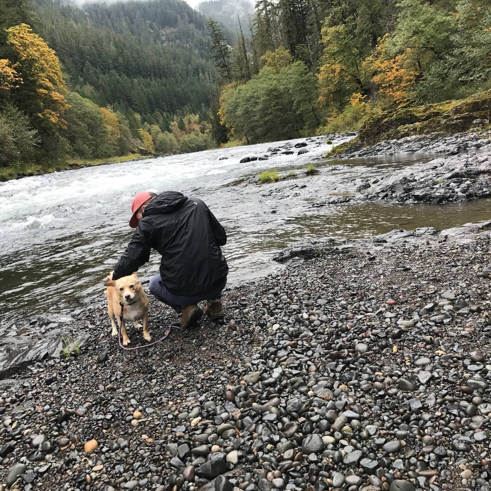

John Edmondson
Full Stack Developer / Graphic Designer
Entry-level, Wordpress developer, with a knack for solving a variety of complex technical challenges. Developed and launched 100+ Wordpress projects and provide ongoing support for 80+ clients for Navigation Advertising. Introduced the team to project management software tools, modernizing the team’s processes and workflows. Passionate advocate for better design practices.
Recent Work
Wikipedia Replica
This project was created to practice some of the coding concepts learned in class at Epicodus. Tasked with recreating the Wikipedia homepage from scratch using Bootstrap however this project is work in progress. Most recently I worked to get the sidebar formated and styled.
Languages & Frameworks
- HTML
- CSS
- Bootstrap
Animal Shelter
This project was created to practice some of the coding concepts learned in class at Epicodus. Connecting images to a webpage, creating anchor tags and linking between multiple html files, and then finally branching the project in git to create two different color schemes and to then merge the favorite back to the main git repository.
Languages & Frameworks
- HTML
- CSS
Steves Private Island
This project was created to practice some of the coding concepts learned in class at Epicodus. Connecting images to a webpage, creating anchor tags and linking between multiple html files, and then finally branching the project in git to create two different color schemes and to then merge the favorite back to the main git repository.
Languages & Frameworks
- HTML
- CSS
About
Wordpress Developer
Navigation Advertising | Murfreesboro, TN
2014 – 2021
- Worked closely with clients throughout website design, development, testing, and debugging, as well as provided continued email and server support
- Utilized lead tracking and analytic services such as Mailchimp, Google Analytics, and Facebook Pixel to optimize email marketing campaigns and create conversion-focused reports for clients
- Delivered on projects with rapid timelines while maintaining communication and efficiency in a remote setting
- Built a variety of ecommerce sites using Woocommerce and Magento for clients in industries ranging from agriculture to motorsports
- Led an assortment of special projects ranging from political podcast management to multi-media asset creation for a Medical consortium.
UI Designer / Front-end Developer
AZMBL (Romano Gatland) | Athens, TN
2013 – 2014
- Brainstormed ideas in business and concept development meetings
- Created and presented user personas, flows, wireframes, and mockups to team members and stakeholders
- Collaborated in an Agile team setting, regularly iterated on designs and created new ideas for features
- Worked closely with the development team to create UI kit for design hand-off
Graphic Design Internship
Aloompa | Nashville, TN
2013
- Attended and participated in the teams’ daily scrum, which provided a look at how large development teams utilize different process frameworks.
- Created conceptual mobile UI designs for a variety of music festivals such as Bonnaroo Music Festival, Musicfest NW, Outside Lands, Electric Forest, and San Francisco Street Festival
- Led and participated in design hand-off with the development teams
- Completed HTML & CSS edits to company’s forward-facing website
Graphic Design Assistant
James E. Walker Library at MTSU | Murfreesboro, TN
2012 – 2013
- Established a new directional signage system for navigating each department of the campus library
- Designed Stall Wall, a weekly newsletter published in library restrooms that used QR code tracking, which informed students about job listings and new events.
- Created a website for the university informing students about the replica Benjamin Franklin Printing Press and its unique opportunities for use in the library.
- Designed, printed, and circulated posters and yard signs around the university advertising library services
Education
BFA Graphic Design
Minor in Interactive Design
Middle Tennessee State University
Murfreesboro, TN
Graduated 2013
Top 5 Soft Skills
- Critical Thinker
- Design Oriented
- Positive Attitude
- Humble
- Patient
Top 6 Interests
- Collecting Hobbies
- Science Fiction
- Movies
- Gaming
- Sourdough Failures
- Ping Pong
